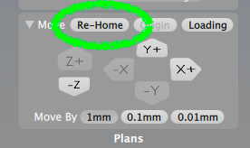

Bantam Milling - 1
This guide describes how to mill a PCB, starting from an Eagle board file, all the way to milling a complete PCB on the Bantam milling machine.
If you have not yet gone through the Bantam Setup guide, you must go through that guide first before moving on to this one.
Open and View File
At the bottom-right of the app, there is a button "Open Files..." where you can load in your Eagle .BRD file.

After the file has loaded, you'll see some new cutouts in the copper material, as well as a new box on the right side of the app.
Create Toolpaths
The Bantam software calculates what sections the bits will cut into, in order to create your design. A plan is created, and it is called the "toolpath". We can create different "toolpaths" by selecting different types of bits to cut with.
Take a closer look at the new box on the right side. This is where all the details of your design file are shown.
As a default, Bantam will add only a 1/32in Flat End Mill. However, you want to add a larger bit and a smaller bit. In our class, we will usually be using:
- 1/16in Flat End Mill
- For removing large copper sections, and board cutout
- 1/32in Flat End Mill
- For removing smaller copper sections, and drilling holes/vias
- PCB Engraving Bit 0.003"
- For removing the tiny sections of copper
Using all three of these bits will save you time, and help prevent smaller bits from breaking.
Add those two other bits (1/16 and Engraving) to the menus.
Now the "toolpaths" created by the Bantam software are using all three bits. This will save time and help prevent your small bits from breaking.
Select Parts to Mill
Let's get a better view of our design. At the top of the screen, there are button to change the viewing mode.
Click the "Top View" button to get a better view of your circuit design.
Now you can see your design from the top.
To zoom in and out, hold down the SHIFT key and SCROLL (on you mouse or trackpad).
Right now, the software is prepared to cut everything. However, we can have it cut (for example) just the cutout, or maybe just the holes.
Use the three buttons in the design box to select which parts are milled.
Here is the file, with only the Outline:
Here is the file, with only the Holes, (there are no holes in this design!):
Here is the file, with only the Traces:

For the rest of this tutorial, we'll be milling the design with all 3 of the buttons selected, so we'll mill everything at once.
Insert Smallest Bit
While milling, the Bantam software will always start with the smallest bit. When that bit is done cutting, it will automatically ask you for the next smallest bit. So, before we start cutting, we need to add the smallest bit.

This tutorial's smallest bit is the PCB Engraving Bit 0.003"
Insert the bit, and remember to be very careful not to drop the bit. Keep a finger underneath so it doesn't fall out.
Now in the app, select the correct bit, and run the tool locate procedure
Here is a video of successfully locating the PCB Engraving Bit 0.003"
If the Z axis "skips" while moving up, then go to the Bantam Setup guide and clean the rails.
Because there is a small change that the Z axis "skipped" even a tiny, tiny bit, you should always "Re-Home" after doing a tool location.
Start Cutting
Our design is loaded, our toolpath is created (with three bits), and our smallest bit is inserted and located.
Let's cut!
Make sure all the windows are on the Bantam. If there is a missing window, the machine will not allow you to cut.
When ready, press the "Mill All Visible..." button underneath the design box.
The bit will now start cutting the PCB Engraving Bit 0.003" toolpath.
Changing Bits
When the current toolpath is finished being cut, the machine will ask you to change to the next bit. For us, that next bit is the 1/32in Flat End Mill.
Insert the 1/32in Flat End Mill, and run the tool locate procedure.
Here's a video of the bit successfully locating, and then immediately moving back to start cutting the design.
Adjust Board Thickness
Below is a video of a 1/16in Flat End Mill removing some copper. If you look closely, a bad thing is happening: not all of the copper is being removed (oh no!!!).
Here is a picture of what the PCB looked like after missing a lot of the copper:
We can fix this! We can tell the Bantam software that the PCB is 0.1 mm thinner, and then try cutting again.
Here is the original thickness of the PCB:
And here is the new thickness of the PCB, 0.1 mm thinner:
And if we mill it again, the copper is now removed, and looks like this:
Remove and Clean Board
You can peel off the PCB when it is finished being cut. It is very helpful to use a flathead screwdriver, or a scraping tool to peel it off.
Once it is removed, rub the copper with a scour pad. This will remove any rough edges, and make the copper much shinier (pretty!).
Now you can clean your PCB with some 91% isopropyl alcohol, and move on to soldering.